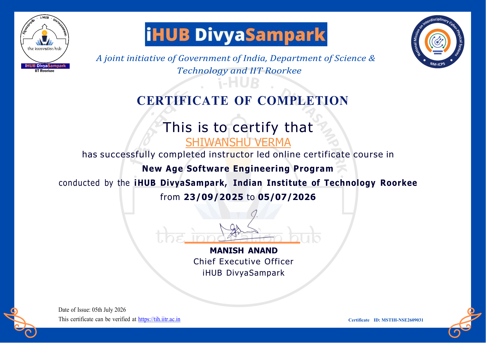

AI Product Thinking
I design AI experiences around real user problems, context awareness, and practical workflows that feel useful from day one.
Passionate software & AI engineering at IIT Roorkee's iHUB DivyaSampark program, building expertise in full-stack development, AI systems, and LLM-powered applications.
Stay curious. Keep building. Your next step matters.

Hello! I'm Shiwanshu Verma, a passionate AI & software engineer currently complete AI & Software Engineering course from IIT Roorkee.
I have strong interest in Web Development, AI-ML, and building modern 3D dynamic websites. I love solving problems and continuously improving my technical skills.
Currently, I’m enhancing my skills through hands-on projects and an AI & Software Engineering program from IIT Roorkee, with a focus on real-world problem solving.
I believe in consistent learning, practical implementation, and delivering impactful results. Actively seeking opportunities to contribute, grow, and build meaningful tech solutions.
When I'm not coding, I enjoy exploring new technologies, contributing to open-source projects, and connecting with fellow developers and AI enthusiasts.
Certified by IIT Roorkee I hub DivyaSampark
I design AI experiences around real user problems, context awareness, and practical workflows that feel useful from day one.
My learning focuses on scalable application architecture, clean APIs, and end-to-end development from idea to deployment.
I enjoy turning concepts into working products, iterating quickly, and documenting the process so the outcome is both useful and reusable.
Small steps every day turn into big dreams. Keep building, keep believing.
— A gentle reminder to keep goingDesigned an intelligent assistant that summarizes notes, answers questions, and helps learners stay organized during study sessions.
Explore the idea →Created a polished personal website with neon visuals, animated interactions, and thoughtful storytelling to reflect a modern developer brand.
See the experience →Building a retrieval-based assistant that connects knowledge sources with intelligent agents for more context-aware responses.
View the roadmap →A RAG-based AI chat application that lets users upload documents, retrieve grounded context, and ask questions with citations.

View CertificateFilter the experiments, tools, and ideas shaping my learning journey.
Document-grounded answers with retrieval, citations, and a workflow designed for trustworthy research.
How chunking, embeddings, and source context work together in a useful AI product.
An AI companion that summarizes notes, answers questions, and helps learners keep momentum.
How to shape an LLM feature around a clear user task instead of adding AI for its own sake.
A living portfolio that combines animated interactions, responsive layouts, and a story about steady growth.
How visual polish, performance, and accessible structure can support the same personal story.
A deliberate practice track covering data structures, algorithms, object-oriented design, and testing.
Why strong fundamentals make later backend and AI systems easier to reason about.
An evolving experiment connecting retrieval, tools, and agents into a context-aware workflow.
How state, tool boundaries, and retrieval quality influence an agent's reliability.
A backend learning track for building validated APIs with authentication, databases, and maintainable architecture.
How clear contracts and validation turn a prototype into a dependable service.
No builds match that search yet.
I'm actively learning and open to internships, collaborations, and exciting software engineering opportunities. Currently at IIT Roorkee's New Age Software Engineering student .